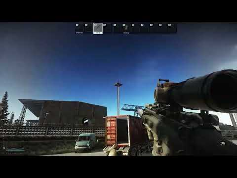

Dick Marcinko - Rogue Warrior Voice Pack
- Downloads
- 4,109
- Favourites
- 4
- Mod lists
- 12
Adds the iconic voice of Richard “Dick” Marcinko, played by Mickey Rourke, from the video game Rogue Warrior (2009).
The voice is available to both USEC and BEAR. The voice is not added to bots.
How to install:
Extract the user folder and move it to your main SPT install folder. Overwrite if prompted.
Any updates to this mod can be installed the same way.
How to use:
Switch to the new character voice in the in-game Sound settings.
Demo:

Notes:
Most voice lines are found in the following phrase groups:
- Mumble (F1)
- Fight mumble (double-tap F1)
- Enemy down
- Fire
- Scav
- Bad work
- Good work
- Ready
Acknowledgments:
• GrooveypenguinX et al. for WTT - CommonLib - the framework which makes this whole thing possible.
• GrooveypenguinX and rockahorse for WTT-Up In Smoke - this mod was originally based off of its server code.
• JustNU for STALKER VOICES - contains a link in the description to a Unity project for creating the proper assetbundles. I uploaded a backup of the Unity project, it’s available here. I did not create the Unity project itself and can’t help troubleshoot it.
Version
1.0.6
Finally updated for SPT 4.0!
Dependencies
Version
1.0.5
Update for SPT 3.11
Version
1.0.3
Update for SPT 3.10
- Fixed blank mod config (F12) menu
NOTE FOR THOSE UPGRADING FROM 1.0.2: If WTT-VoicePatcher.dll exists directly in the BepInEx/plugins folder you must delete it. The WTT-VoicePatcher.dll file should only exist in the SPT/BepInEx/plugins/WTT-VoicePatcher folder, otherwise you will face issues.
Version
1.0.1
This version is only compatible with SPT 3.9
Version
1.0.0
This version is only compatible with SPT 3.8